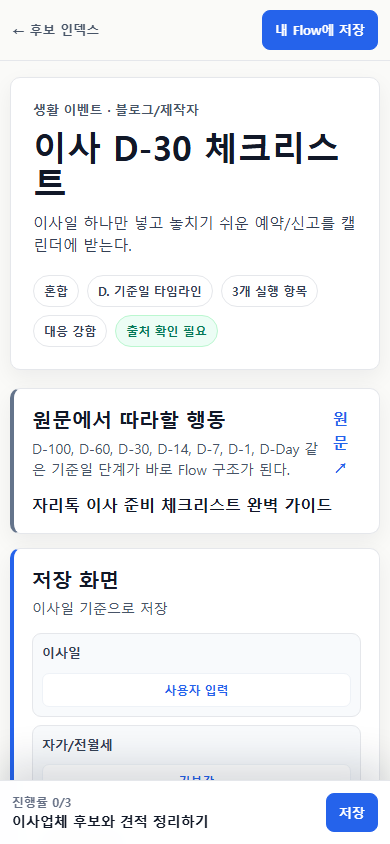
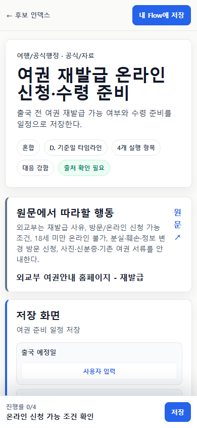
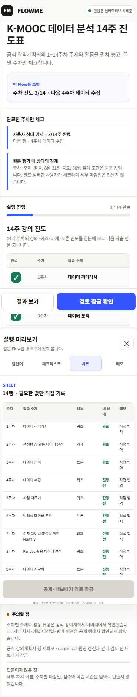
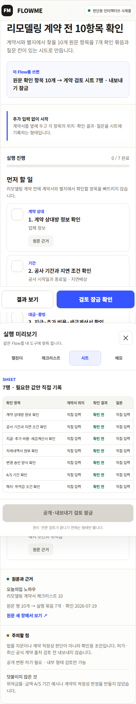

01 · 6개
때맞춰 준비하기
이사일·출발일·검진 기준일을 넣으면 앞뒤 일정과 체크 항목이 움직입니다.
내부: date_preparation
CEO · 제품 · 콘텐츠팀 교정 보고 · 2026-07-20
이전 갤러리는 P0 전략 원장의 아이디어를 실제 콘텐츠처럼 유지했습니다. 이번 교정에서는 빈 후보와 부분 대조군을 현재 저장소의 source-backed Flow로 교체해, 24개 모두 실제 실행 항목을 볼 수 있게 했습니다.
실행 4개 + 시작 상태 1개
버킷 저장은 다섯 번째 콘텐츠 종류가 아니라 모든 Flow 앞에 붙을 수 있는 공통 상태입니다. 날짜가 없는 콘텐츠도 먼저 쓸 수 있어야 하며, 날짜를 넣었을 때만 캘린더가 생깁니다.
이사일·출발일·검진 기준일을 넣으면 앞뒤 일정과 체크 항목이 움직입니다.
내부: date_preparation
재료·서류·절차·경로를 원문 순서대로 따라가고 완료 기준을 확인합니다.
내부: ordered_procedure
주차·회차·자료·단계를 이어서 쓰고 어디까지 했는지 남깁니다.
내부: repeating_routine · progress_tracking · resource_queue · phase_lifecycle
조건과 확인 결과를 표에 남기고 선택·보류·질문을 구분합니다.
내부: compare_decide
권고: 사용자에게는 ‘먼저 저장 → 필요할 때 시작’을 공통으로 보여줍니다. 아래 카드의 날짜는 화면과 결과물을 판단하기 위한 가정값이며 원문 사실·실제 사용자 일정이 아닙니다. resource_queue 같은 내부 코드는 제작·검토·내보내기 규칙에만 남깁니다.
P0 portfolio v2 · 24 concrete flows
모든 카드에 현재 실행 항목이 있습니다. 카드를 누르면 항목, 첫 사용 방식, 출처 수준, 공개·내보내기 상태를 따로 볼 수 있습니다.
모든 P0 카드에 현재 저장소에서 확인한 실행 항목과 출처 연결이 있습니다.
근거 없는 후보 5개와 일부만 맞던 후보 2개를 실제 Flow로 교체했습니다.
실행 항목 0개 카드와 의도적 보류 카드를 P0 갤러리에서 제거했습니다.
교정 근거와 남은 경계
24개 모두 현재 저장소에서 실행 항목을 확인했습니다. 권리·최신성·안전·지역성 검토와 실제 사용자 가치는 별도 문턱으로 남습니다.
저장소 근거 · 2026-07-20. 이 갤러리는 5개 deep-source 사례와 현재 seed Flow를 다시 선별한 P0 교정안입니다. 24개 모두 실행 항목이 있으며, 빈 후보 5개와 부분 대조 2개는 실제 콘텐츠로 교체했습니다. 사용자 검증·제작자 허가·공개 발행 완료를 주장하지 않습니다.